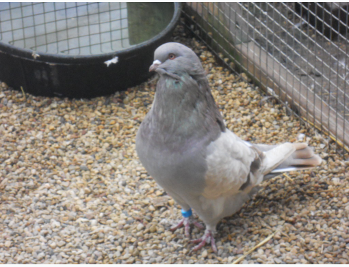
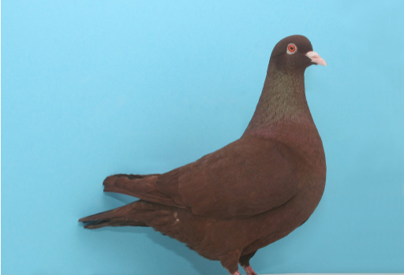

Breeds and Types of Pigeons: From Rollers to Racers
Pigeon Breeds for Utility and Sport
UTILITY || FANCY || HOMING

Reading Time: 5 minutes
Recognized as a Master Breeder of Old Dutch Capuchines and Bavarian Pouters, Layne Gardner has had the good fortune of traveling the world photographing various types of pigeons. In her 50 years of raising pigeons (she started early!), she has developed a passion for quality and enjoys seeing excellent specimens in various breeds. She may have chosen Capuchines for their elegant Cruella de Vil neck feathers and possibly the Bavarian Pouters for their attractive balloon-like crop. But what characteristics and breed will you choose?
With hundreds of types of pigeons to pick from, selecting a breed or variety can be overwhelming. Popular pigeon facts include their ability to adapt to various conditions and their inexpensive maintenance costs, which doesn’t help narrow down the choices. One of the best ways to choose a breed is by focusing on the flock’s purpose. Types of pigeons may be grouped into three classes: utility, fancy, and flying or homing breeds.
_____________________________________________________________________________________________________________________________________________
UTILITY BREEDS
These birds are used mostly for squab production. The largest types of pigeons in this category include the White Kings, Red Carneau, French Mondaine, Giant Homers, and the ironically named Runts.
Michael Kolodziej, owner of Ruffled Feather Farm, has been raising pigeons for 30 years. Currently, he raises one of the largest pigeon breeds and one of the smallest.
“The giant runt is the largest breed of pigeon, and their size alone makes them regal,” he says. “They are truly a gentle giant. They are not the easiest breed to work with; because of their size, they break their eggs and even crush their young.”
He tells me that they are best left undisturbed. When the squabs hatch, it’s amazing to watch this tiny chick develop into a giant.
“I very seldom advertise my runts; they sell themselves,” Kolodziej adds. “When people see them, they just have to have them. Their mass and impressive size win you over.”
-

Runt Pigeon
Photo by Michael Kolodziej.
-

Red Carneau Pigeon
Carneau pigeons originated in northern France and southern Belgium. Their size makes them suitable for squab production.
Photo Red Carneau by Layne Gardner. -

French Mondain
The French Mondain is valued for its beauty and food source. Photo by Layne Gardner.
-

Opal French Mondain
Here is a beautiful example of an opal French Mondain, compared to the typical blue.
Photo by Layne Gardner.